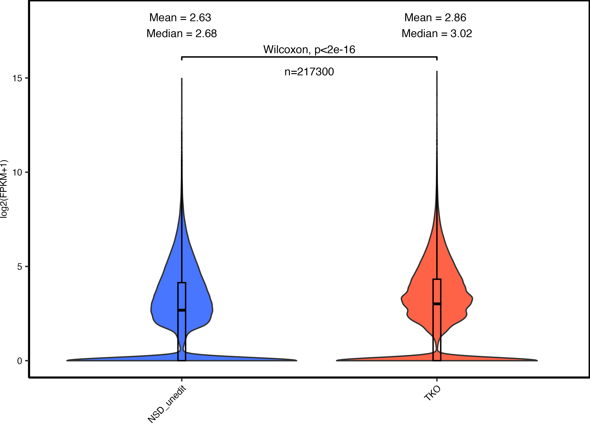

Analyzing regions of K9me3 loss
10kb bin cluster analysis
- Cluster B coincides with K9me3 regions that are highly enriched in PA that is lost in TKO. Indeed cluster B is found at intergenic regions (gene-poor regions).
- Cluster A coincides with lower enriched K9me3 regions found in both PA and TKO, where more ATAC-seq peaks are found (see IGV snapshot).
Density plots
IGV snapshot

Genes within and outside clusB
- Genes that overlap both cluster A and B domains are excluded from these analyses. See example below with the gene Dnah5.
- Only genes with FPKM > 1 are included.
- NSD3-unedit and two unedited clones of NSD1-KO are used for comparison.
Genes within clusB
- Following TKO, genes within cluster B increase in expression, consistent with loss of the silencing mark K9me3 in these regions.
Genes outside clusB
- When filtering for genes found only in cluster A, there is a slight decrease in expression, consistent with loss of K36me2 and invasion of K27me3 in these active regions.
TE within and outside of clusB
- TEs that overlap both cluster A and B domains are excluded from these analyses.
- Only TEs found at intergenic regions and with FPKM > 1 are included.
- NSD3-unedit and two unedited clones of NSD1-KO are used for comparison.
TE within clusB
- There’s an upregulation of about 475 TEs in cluster B regions, where there are K9me3 loss in TKO. Additionally, when looking at violin plots, there is an overall upregulation of TEs within these cluster B regions in the TKO cell line compared to parental.
- Loss of K9me3 in the TKO cell line likely drives this upregulation of TE expression
Volcano
Violin
TE outside clusB
- The volcano and violin plots indicate an upregulation of TEs in TKO compared to NSD-unedited.
Volcano
abs(log2FC) > 0
abs(log2FC) > 2
Violin

ATACseq peaks within K9me3 clusters
- Below describes ATAC-seq peaks within these K9me3 clusters.
- Note: K9me3 10kb bins were merged within 100000bp of each other.
ClustB
- 2423 total ATAC-seq peaks are found within these K9me3 cluster B domains.
- 1648 of these peaks open up in TKO within these K9me3 clustB domains. ie. chromatin regions are opening in the regions where there are K9me3 loss in the TKO cell line. These new ATACseq peaks are typically small peaks (see IGV snapshot).
- 374 ATAC-seq peaks are found in both TKO and PA cell lines in these K9me3 clustB domains.
Venn-diagram
IGV snapshot


ClustA
Heatmaps
Union
- Centering ATAC/ChIP-seq signal on a union of ATAC-seq peaks within K9me3 cluster A and Cluster B.
- At cluster B peaks, there is an increase in TKO ATAC-seq signal, but this is likely as a result of TKO ATAC-seq peaks constituting a greater proportion of the union peaks.
Intersect
- Centering ATAC/ChIP-seq signal on an intersect of ATAC-seq peaks within K9me3 cluster A and Cluster B.
- When looking at the intersect, the signal in cluster B ATAC-seq peaks is now more similar between PA and TKO. However, we actually see higher K27ac in PA in ATAC-seq peaks in both clusters.
Individual
- Centering ATAC/ChIP-seq signal on either TKO-only or PA-only ATAC-seq peaks within K9me3 Cluster B.
- As a sanity check, indeed we see higher TKO ATAC-seq signal within cluster B TKO ATAC-seq peaks. The same is found for PA.
- These small ATAC-seq peaks seem to be opening up in the TKO sample in regions of K9me3 loss and some of these new open chromatin regions are marked by K27ac.